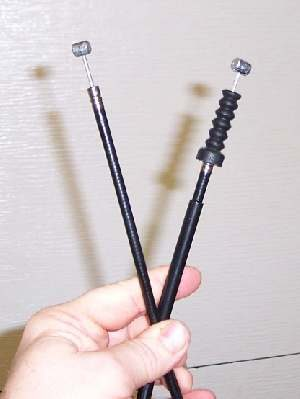

The clutch cable runs from the lever on the left handlebar to the clutch release arm on the engine. It is an inner steel wire that slides inside an outer sleeve, with an adjuster at the lever and often a second one at the engine end.
What it does
When you pull the lever, the inner wire moves and turns the release arm, which takes spring pressure off the clutch plates. A small amount of slack at the lever (free play) makes sure the clutch is fully clamped when the lever is released. Cables stretch, rust, fray at the ends and get stiff when dry or badly routed.
Signs it is worn or failing
- Lever is heavy or gritty: Heavy clutch or Cable frayed or stiff.
- Lever goes slack or has no feel: Clutch has no resistance.
- Too little free play makes the clutch slip: Clutch slips.
- Too much free play makes it drag: Clutch drags.
When to replace it
Replace the cable if any strands are broken, the outer sleeve is cracked or kinked, or it stays stiff after cleaning and oiling. A cable that has broken once on the road should not be repaired with a clamp nipple except to get home slowly.
What to match when buying
- Make, model and year. Length, end fittings (barrel or ball nipple), adjuster type and outer length must match.
- Compare the new cable with the old one side by side before fitting.
- Some cables are lined with plastic and should not be oiled with thick oil; follow the maker's note.
- Cheap cables often have thin inner wire and soft outer sleeves that compress, giving a spongy lever.
Fitting notes
- Route the new cable exactly where the old one ran, away from the exhaust and with no tight bends. Turn the bars lock to lock and check that the free play does not change.
- Home job: Replace the clutch cable, then Adjust clutch lever free play.
- Keep it working: Lubricate control cables.
- Depending on the bike, the cable can be adjusted at both ends, at one end, or somewhere in the middle. Keep at least a little free play at the lever.
Reference (K-Light 125)
| Item | Value | PDF page |
|---|---|---|
| Clutch lever free play | 10 to 15 mm | 69 |